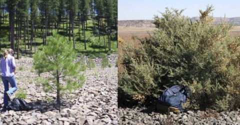
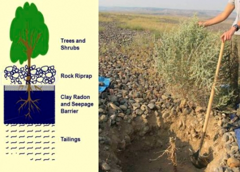
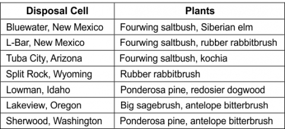
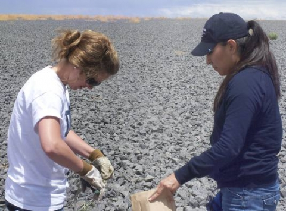
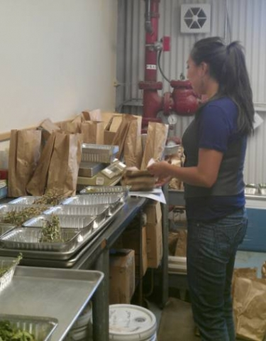

Weaving Community and Science: Former Summer Intern Is Investigating Plant Uptake of Contaminants on Disposal Cell Covers
Carrie Nuva Joseph, a former U.S. Department of Energy (DOE) summer intern at the Grand Junction, Colorado, office; current graduate student in the University of Arizona’s Department of Soil, Water, and Environmental Science; and a Native American community stakeholder, is helping the Office of Legacy Management (LM) understand the effects of plant growth on engineered disposal cell covers.
Mother Nature fills a vacuum—plant encroachment happens!
Cover designers spread and compacted thick layers of clayey soil over tailings piles to limit both the escape of radon gas into the atmosphere and the seepage of rainwater into the tailings. Designers then used durable, rock riprap to armor the clay barriers and tailings against wind and water erosion.
|  |
| Examples of trees and shrubs growing on rock-armored disposal cells: Ponderosa pine at Lowman (left) and fourwing saltbush at Bluewater (right). |
Plants have found homes on many of LM’s rock covers in diverse climates across the country. LM has learned through years of field investigations that many plants send their roots down into the clayey soil layers. The rock riprap acts as a mulch holding rainwater near the soil surface, wetting the clayey soil more than normal, trapping dust and nutrients, and thus creating pockets favorable for plant germination and growth. Ponderosa pine at Lowman, Idaho; Japanese knotweed at Burrell, Pennsylvania; sagebrush at Lakeview, Oregon; rabbitbrush at Split Rock, Wyoming; and fourwing saltbush at Bluewater, New Mexico, are examples of plants that have taken up residence on disposal cell covers.
|  |
| Illustration and excavation of a fourwing saltbush plant rooted in a disposal cell cover. |
Plants can be both friend and foe when they grow on LM disposal cell covers. Plant roots can take up rainwater stored in cover soil layers and return it to the atmosphere, a process called transpiration. Plant transpiration, in concert with evaporation of water from cover surfaces (evapotranspiration), can prevent seepage of rainwater into tailings. Plants also aid in erosion protection by absorbing raindrop impact and by aggregating soil particles. Although plant roots take up water and help protect against erosion they also enhance natural soil-forming processes that can leave fine cracks in the clayey soil, potentially increasing radon escape and water seepage. Plant roots may also take up contaminants if they become rooted in tailings.
LM has only a partial understanding of plants on disposal cell covers. The long-term benefits of vegetation on covers might outweigh the detriments at some sites but not at others. Understanding the plants on covers on a site-by-site basis will aid vegetation management decisions.
Weaving family, community, and science
Ms. Joseph is an active member of Hopi communities in northeastern Arizona. Her evolving perspective of LM's stewardship responsibilities weaves together threads of traditional Hopi environmental values, experience interacting with LM personnel, and the objectivity of a scientist working to help LM answer pertinent and often complex questions that will help LM understand the effects of plant growth on engineered disposal cell covers.
| University of Arizona Master of Science graduate, Carrie Joseph (center), her daughter, Kara (far right), and her parents, Charlene and Harold. |
Through her upbringing and the teachings of her family and tribal elders, Ms. Joseph embraces the deep Hopi sense of perpetual interconnectedness with the forces and cycles of nature. Often, after a week of classwork, lab work, and research at the Tucson, Arizona, campus, she and her daughter return home for the weekend to participate in ancient Hopi ceremonies that celebrate an intimate human contact with nature, and in Hopi rituals that strive to keep daily activities and natural forces in harmonious balance.
Ms. Joseph’s village community, Moenkopi, sits a few miles from LM’s Tuba City, Arizona, Disposal Site. Since childhood, Ms. Joseph had concerns that groundwater contamination from the site was harming her community. She learned otherwise through discussions with her LM hosts and her review of groundwater monitoring reports. “LM has been a great support to my understanding of the environmental problems near Native American communities,” says Ms. Joseph. She is grateful to LM “for the opportunity to contribute,” and hopes that she has influenced “the development of environmental programs that acknowledge traditional perspectives.”
What Ms. Joseph’s research is showing LM about plant uptake
Ms. Joseph’s research of the uptake of contaminants by plants rooted in disposal cells encompasses both reviews of scientific literature and field investigations. She learned that the scientific literature alone does not provide adequate answers about plant uptake.
Ms. Joseph helped design a field investigation of plant uptake on LM disposal cells located in the proximity of Native American communities. She sampled stem and leaf tissues of deep-rooted plants growing on disposal cells. For comparison, she also sampled the same plant species growing at control sites with soils that were similar to the disposal cell cover soils, but without tailings-related contaminants of concern. She then prepared samples in LM’s Environmental Sciences Laboratory in Grand Junction for analysis at the University of Arizona.
|  |
| LM disposal cells and plant species for Ms. Joseph’s study. |
Ms. Joseph’s Master of Science thesis focused on results from the Bluewater and L-Bar, New Mexico, disposal sites. Her preliminary results show that for some tailings-related contaminants, levels were higher in plants growing on disposal cells, but for others, levels were higher for plants growing at control sites. Ms. Joseph has decided to continue her graduate studies to better understand the variability in her results, to investigate long-term bioaccumulation processes at these and other LM sites, and to evaluate potential environmental consequences.
Sustainable remedies—the perspective of a Hopi scientist
Ms. Joseph views the sustainability of LM remedies, such as the Tuba City disposal cell, through the lenses of science, community, and Hopi tradition. Her village of Moenkopi was founded in the late 1800s by residents of nearby Old Oraibi as a summer farming community irrigated from local springs. Old Oraibi dates back almost 1,000 years—possibly the oldest continuously inhabited community in the United States. In her words, “understanding the remediation efforts is increasingly important because our community is permanently fixed within a reservation boundary. Furthermore, as Native Americans, we have the stewardship responsibility to ensure our lifestyle continues for generations.”
|  |
| LM contractor Sara Woods (left), and Carrie Joseph sampling fourwing saltbush on the Tuba City disposal cell. |
Ms. Joseph hopes to contribute to this effort by combining “my educational background and traditional upbringing,” and by combining “modern science and traditional ecological knowledge to define effective and sustainable management practices for the future.” Ms. Joseph says scientific knowledge and traditional knowledge “are equally important” as we evaluate the sustainability of LM remedies. After all, she says, “traditional knowledge has allowed our communities to survive under normal to the most-harsh environmental conditions for centuries.”
|  |
| Carrie Joseph preparing plant tissue samples for laboratory analysis. |